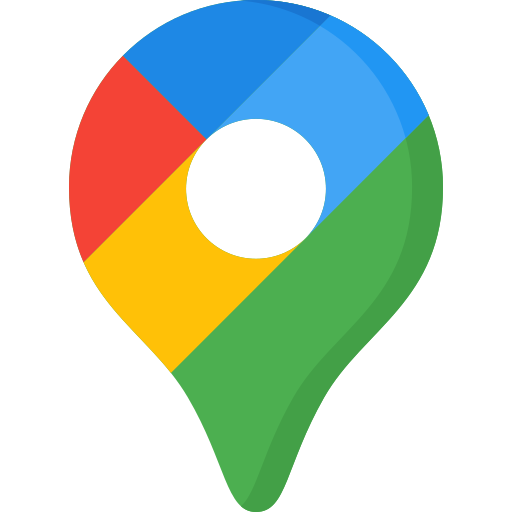
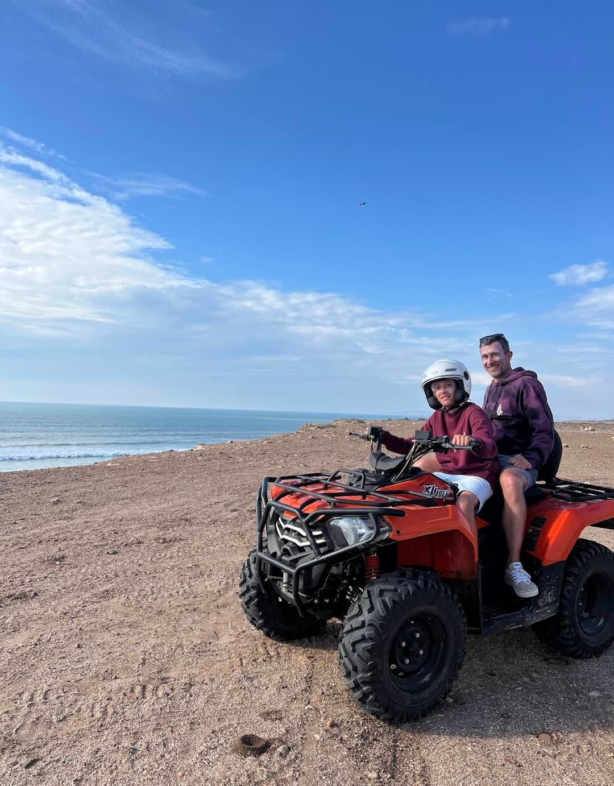
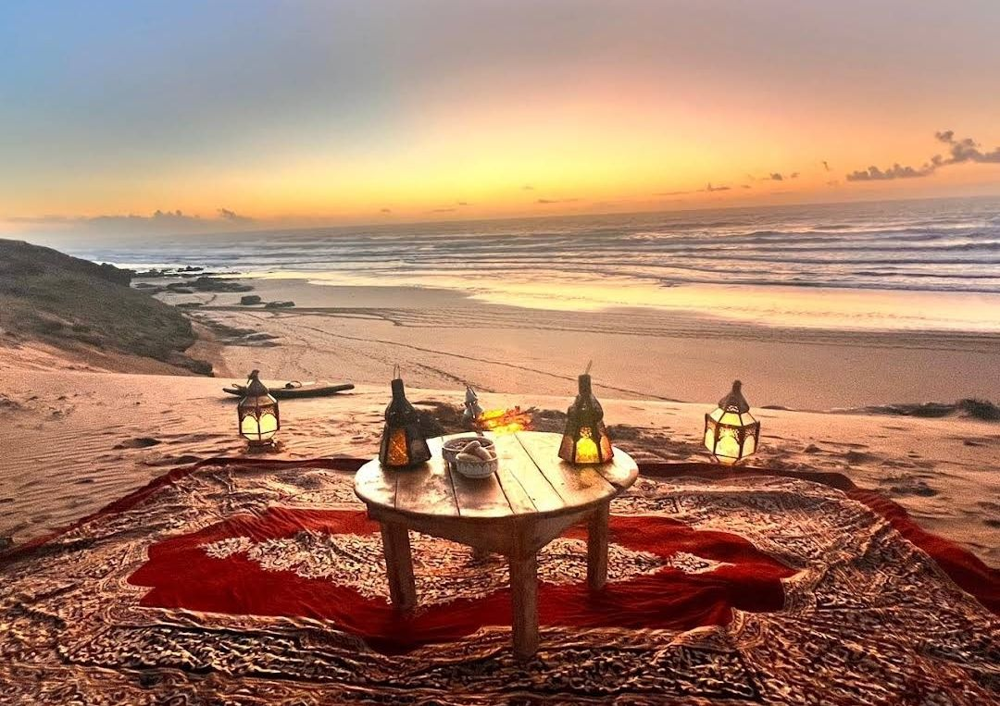
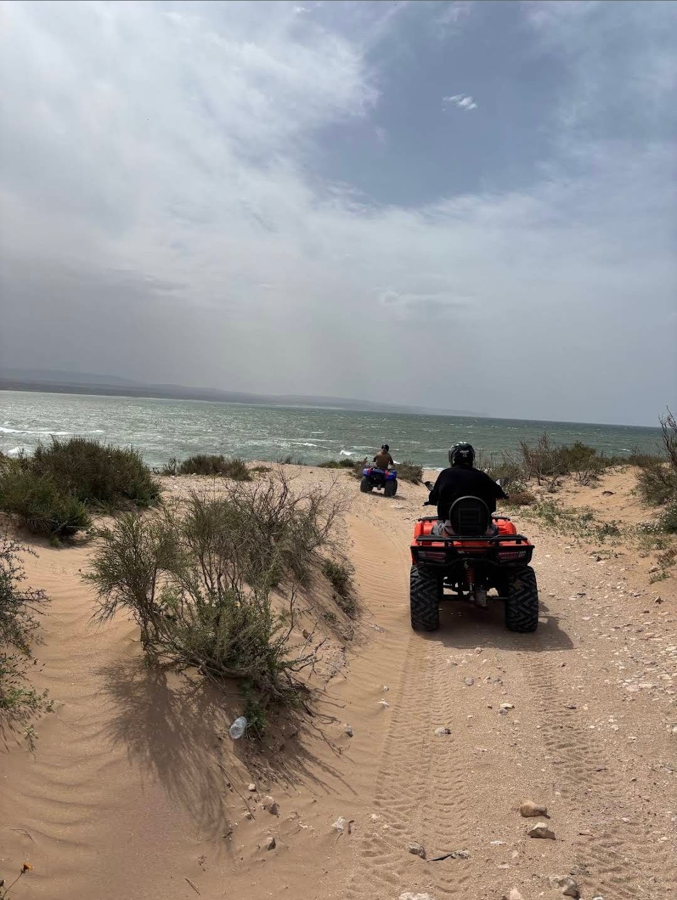
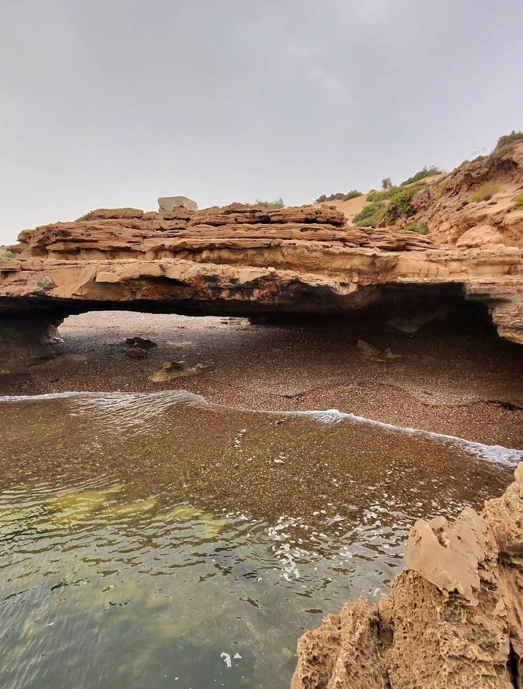
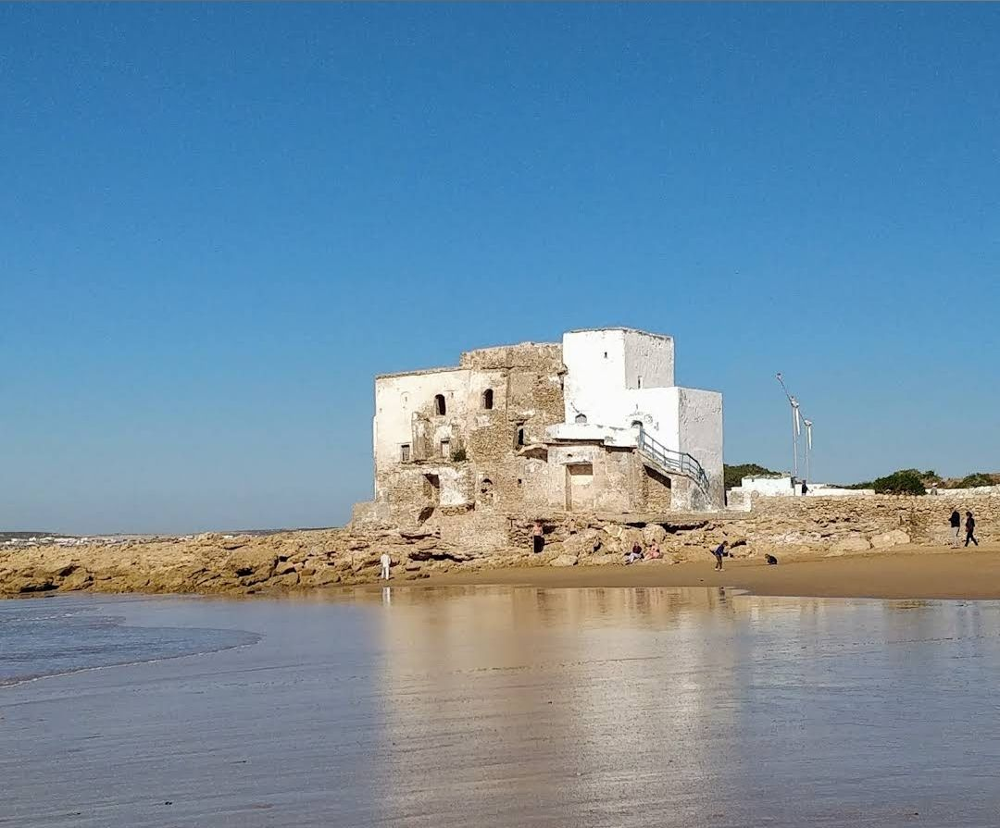
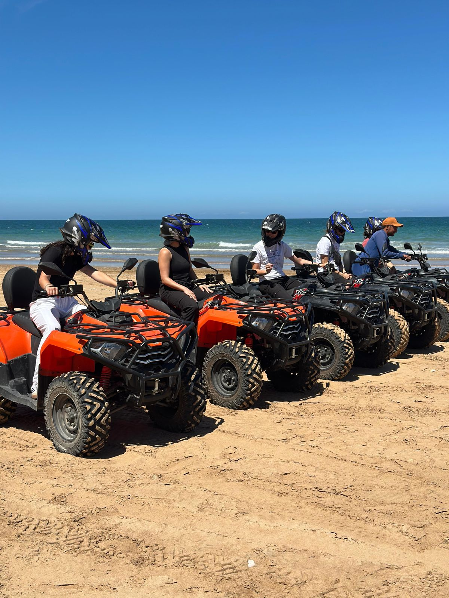
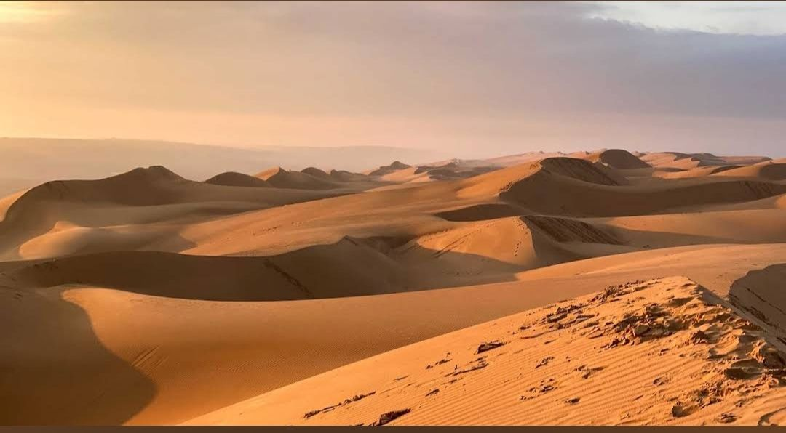
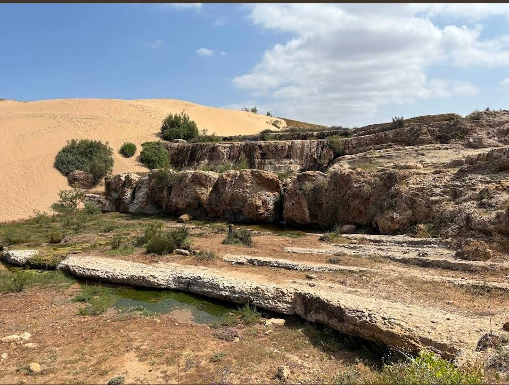
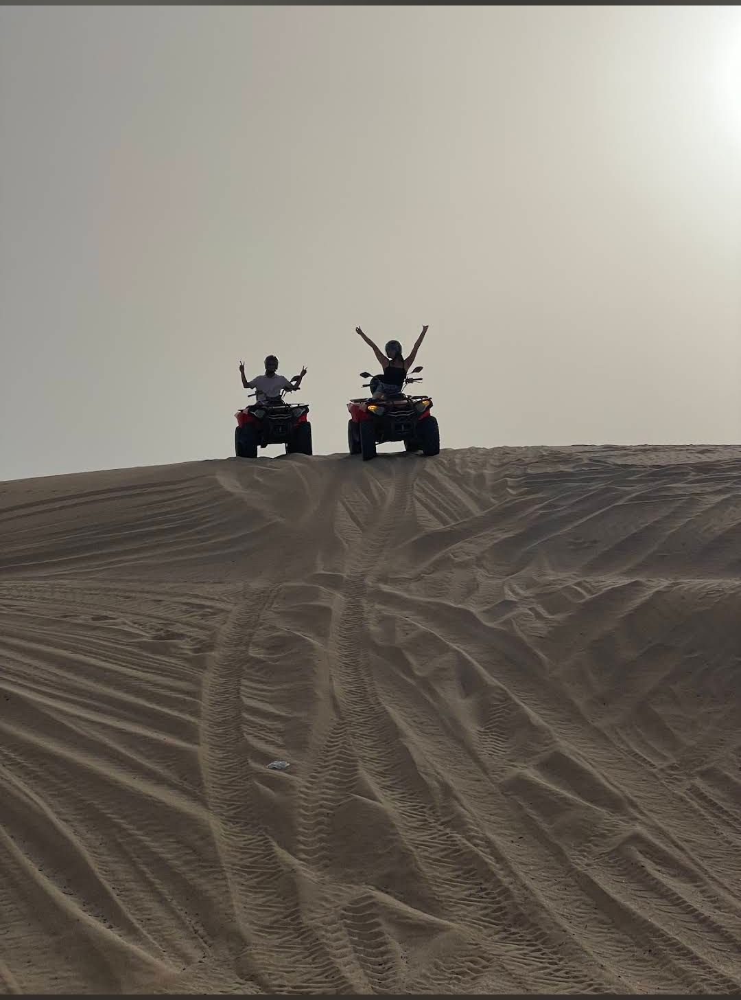

01 heure01
Balade Plage
La première montée dans les dunes de Sidi Kaouki, face à l'océan.
Solo quad300 DH
Duo quad450 DH

Voir nos avis GoogleLà où le désert rencontre l’Atlantique
Des dunes blanches, une côte sauvage et la liberté de rouler à votre rythme.
TOURS EN QUAD À ESSAOUIRA
De la première montée dans les dunes aux grandes traversées vers Cap Sim, chaque sortie est guidée par quelqu'un qui connaît le terrain par cœur.
Prix par quad · guide, casque, carburant et assurance inclus
À LA CARTE
Quatre formats, une même promesse : sortir de la route et revenir avec une histoire à raconter.
La première montée dans les dunes de Sidi Kaouki, face à l'océan.
Dunes, piste rouge, forêt d'arganiers et pause thé à la menthe.
La lumière dorée, la plage vide et un arrêt dans les dunes.
Une grande échappée de Sidi Kaouki à Iftane, déjeuner compris.
Bon à savoir — les prix sont affichés par quad. Deux personnes qui partagent une machine paient beaucoup moins par personne. Paiement sur place en dirhams, espèces ou carte.
LE DÉTAIL DES PARCOURS
Chaque itinéraire s'adapte à la marée, au vent et au niveau du groupe. Le terrain reste sauvage, l'accompagnement ne l'est jamais.

01 heureDÉCOUVERTE
Le format idéal pour essayer le quad sans y passer la journée. Briefing, prise en main sur terrain plat, puis la grande crête de dunes le long de la plage.

02 heuresAVENTURE
Nous quittons la plage pour les pistes rouges, les arganiers et les petits villages. Une pause thé à la menthe avant de revenir par les dunes.

02 à 03 heuresCOUCHER DU SOLEIL
Une sortie tranquille le long de la plage, avec un arrêt dans les dunes lorsque la lumière devient dorée. Un peu de feu, beaucoup d'horizon.

Journée entièreGRANDE ÉCHAPPÉE
Une journée complète entre la plage, les pistes de l'arrière-pays et le village d'Iftane, avec déjeuner inclus et retour au bord de l'Atlantique.
SUR LE TERRAIN
Retrouvez les images originales du projet, avec le nom de chaque endroit ou expérience.





SANS SURPRISE
On s'occupe des détails avant que vous arriviez. Vous n'avez plus qu'à profiter du terrain.
Inclus dans le prix
À prévoir
AVANT DE PARTIR
Une question qui ne figure pas ici ? Écrivez-nous directement, nous répondons rapidement.
Écrire sur WhatsApp ↗Non, aucun permis n'est nécessaire pour conduire nos quads. Un briefing et une pratique supervisée sur terrain plat suffisent. Les mineurs peuvent participer comme passagers accompagnés d'un adulte.
Pas du tout. Nos quads sont automatiques et la plupart de nos clients débutent avec nous. Nous prenons le temps de vous mettre à l'aise avant de partir.
Des vêtements qui couvrent les bras et les jambes, ainsi que des chaussures fermées. Le casque et les lunettes sont fournis.
Le matin pour la lumière et l'air frais, ou en fin de journée pour le coucher du soleil. Le créneau sunset est le plus demandé en haute saison.
Par téléphone, WhatsApp ou via le formulaire ci-dessous. Aucun acompte n'est demandé : le paiement se fait sur place en espèces ou par carte.
Si les conditions sont réellement défavorables, la sortie est reportée ou annulée sans frais.
RÉSERVATION
Remplissez le formulaire et envoyez votre demande directement sur WhatsApp. Nous vous confirmons rapidement la disponibilité de votre créneau.
NOUS TROUVER
09:00 — 19:00